A coordination runtime for networks of autonomous agents — AI, sensors, humans, or anything that can emit and receive events.
"Baran designed networks where no single node is indispensable. This runtime inherits that principle."
Paul Baran invented the concept of distributed, survivable networks — networks where no single point of failure can bring down the whole. Baran OS inherits that principle: agents connect, disconnect, and fail independently. The network adapts.
Coordinating multiple autonomous agents — AI, sensors, humans, rule engines — is hard. Developers build coordination from scratch for every project, or use frameworks designed to orchestrate LLM chains within a single process. Neither scales to heterogeneous, independent agents across networks.
Tools like LangGraph and CrewAI orchestrate LLM workflows in-process. Baran OS is infrastructure for coordinating independent agents across networks. Those tools can run inside Baran agents. Baran is the coordination layer underneath — complementary, not competing.
We're building toward a future where networks of agents — AI, sensors, humans, legacy systems — self-discover, self-organize, and coordinate autonomously.
Agents announce their capabilities and discover each other dynamically. No manual wiring, no static configuration. New agents join the network and become available immediately.
Humans participate as decision-makers when needed — approving plans, resolving conflicts, validating outputs — not as operators manually connecting systems together.
Auto-discovery and self-management are first-class capabilities, not afterthoughts. Each node operates autonomously and can function independently when disconnected.
Independent networks collaborate across organizational and geographic boundaries. A community node handles local events; when capacity is exceeded, it relays to regional or national networks.
A sensor detects a wildfire, an AI agent estimates risk, a rule-based agent allocates resources, a human approves the evacuation plan. Each agent contributes its specialty. With federation, community and provincial networks coordinate hierarchically.
A planner breaks down the task, a coder writes the implementation, a reviewer checks for issues, a tester validates the result. Each agent can use a different LLM or strategy, coordinated as workflow steps with result chaining.
Dozens of agents with different capabilities register dynamically, discover each other through the capability registry, and self-organize into workflows. Broadcast routing and capability-based discovery provide the infrastructure swarms need.
Mix LLM-based agents with rule engines, sensor feeds, legacy services, and human decision points — all speaking the same event protocol. An IoT sensor triggers a workflow, an AI analyzes data, a heuristic applies business rules, a human makes the final call.
Agents connect to the runtime, register their capabilities, and receive workflow steps matched to those capabilities. The runtime handles routing, sequencing, state, health monitoring, and failure detection.

Bring your own language, framework, and logic. Baran only coordinates.
All communication flows through the event bus. No direct agent-to-agent calls. Observable, auditable, resilient.
The runtime owns all state. Agents are disposable and horizontally scalable.
Protobuf-defined events with strict payload typing. No stringly-typed chaos.